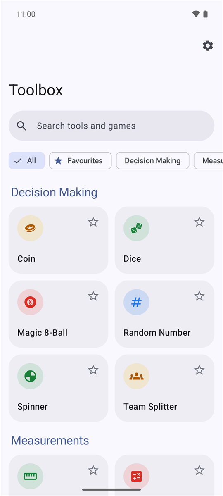
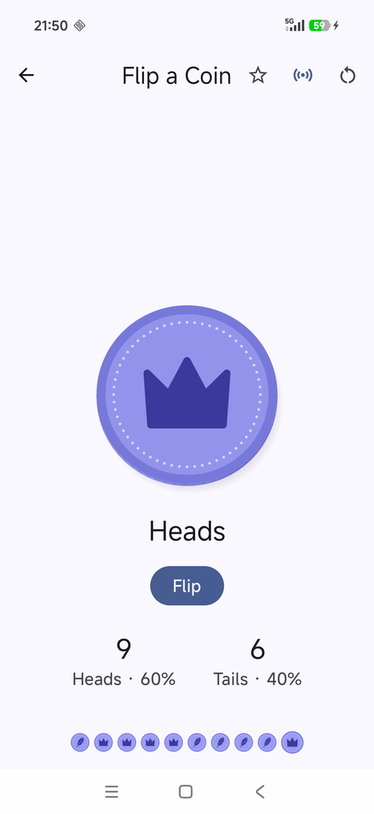
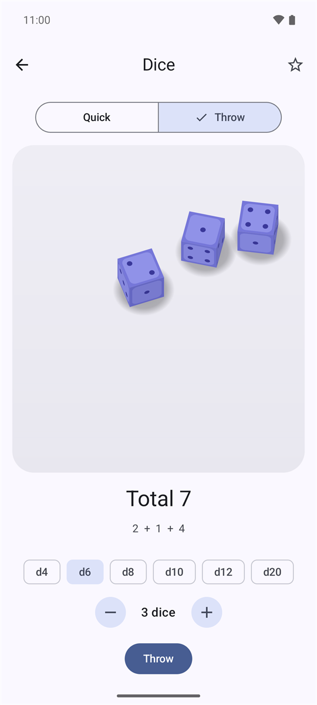
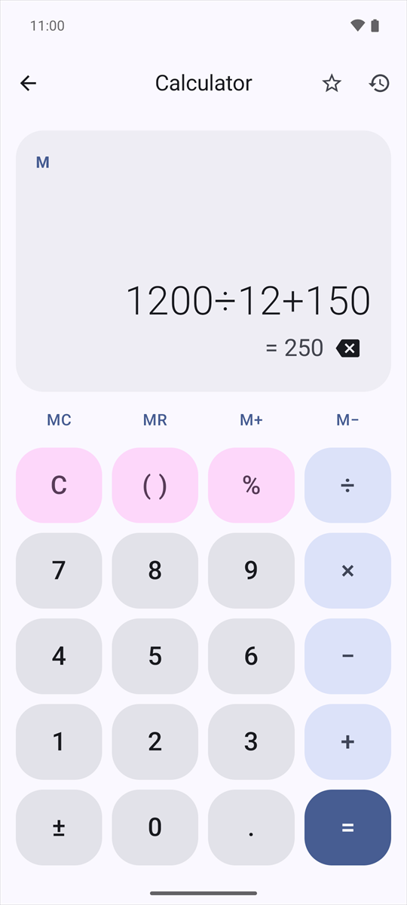
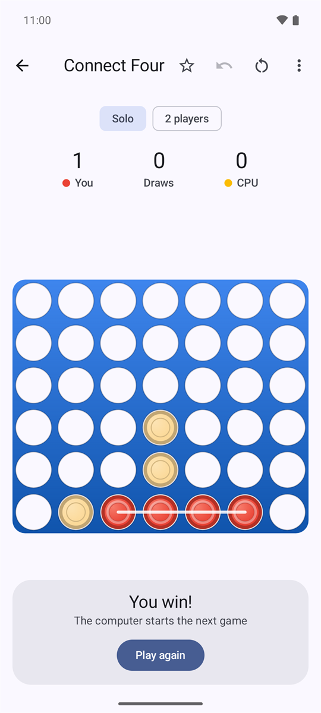
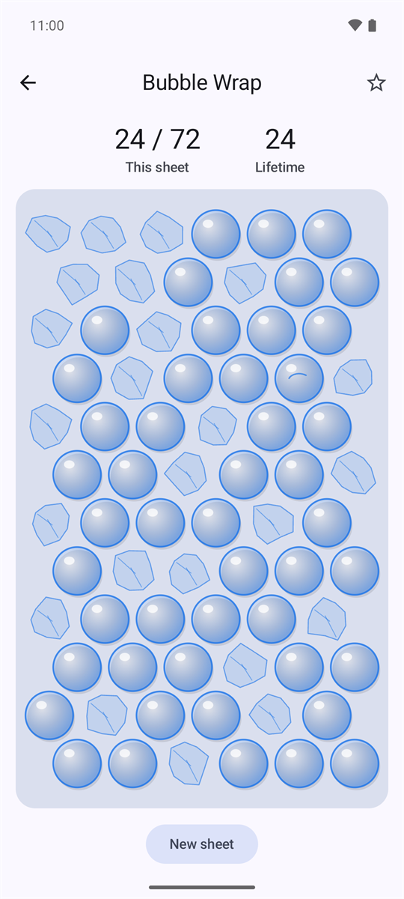

Flip a coin, tune a guitar, time an egg, pop some bubble wrap, or beat a friend at Connect Four. Forty-four small everyday tools, fidget toys and games in one tidy, ad-free app.
Free and offline. No ads, no accounts, no tracking. What’s new in 1.3.0
Material You throughout, with real physics for the coin and dice.






Tiles are grouped into categories, and anything you use often can be starred into Favourites. Search matches keywords too, so “decibel” finds the sound meter and “north” finds the compass.
Shake your phone to decide: it works on all six.
Uses your phone’s sensors and microphone. Permissions are only asked for when you open a screen that needs them, and approximate location only if you turn on true north.
Clocks and counters for the kitchen, the gym and the practice room.
Satisfying sounds and vibration, with one vibration switch for the whole app.
Slow down for a minute, or drift off to the sound of rain.
Quick games with saved best scores. They pause when you leave.
Charades is for a room full of people. The rest can be played against the computer or with a friend on the same phone, with a saved tally for each.
Toolbox is built in Kotlin and Jetpack Compose, styled after Google’s own search tools.
Picks up your wallpaper colours on Android 12 and later, with light and dark themes.
No internet permission, no analytics, no ads and no sign-in. Scores and settings stay on the phone, and go only into your own Android backup if you use one. Step history and the stopwatch are left out. True north keeps only the declination, never your location.
Pitch detection, audio synthesis, dice and coin physics and every game AI are written from scratch.
Shake your phone to flip, roll, spin, ask, pick a number or reshuffle teams. Harder shakes throw higher.
Every screen reads out properly and fits at large text sizes, and the turn-based games can be played with TalkBack.
Microphone and activity access are only asked for when you open a screen that needs them, approximate location only for true north, and notifications when you first start a timer or the stopwatch.
Toolbox.apk from the latest release on your Android phone.Needs Android 8.0 (Oreo) or later.
Upgrading from 1.0.0? It was signed with a different key, so uninstall it first. Its scores and favourites can’t be carried over. Later versions update in place.
Open the project in Android Studio and press Run, or use Gradle with JDK 17 or newer:
git clone https://github.com/totallynotkasai/Toolbox.git cd Toolbox ./gradlew installDebug